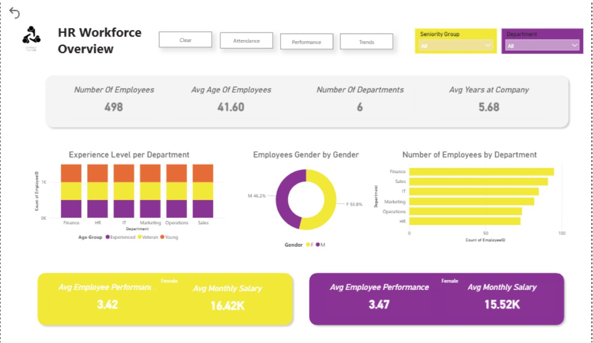
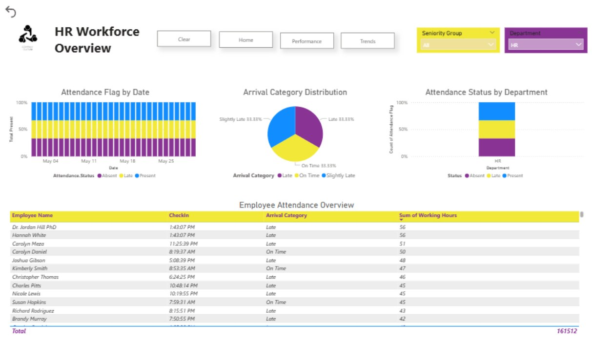
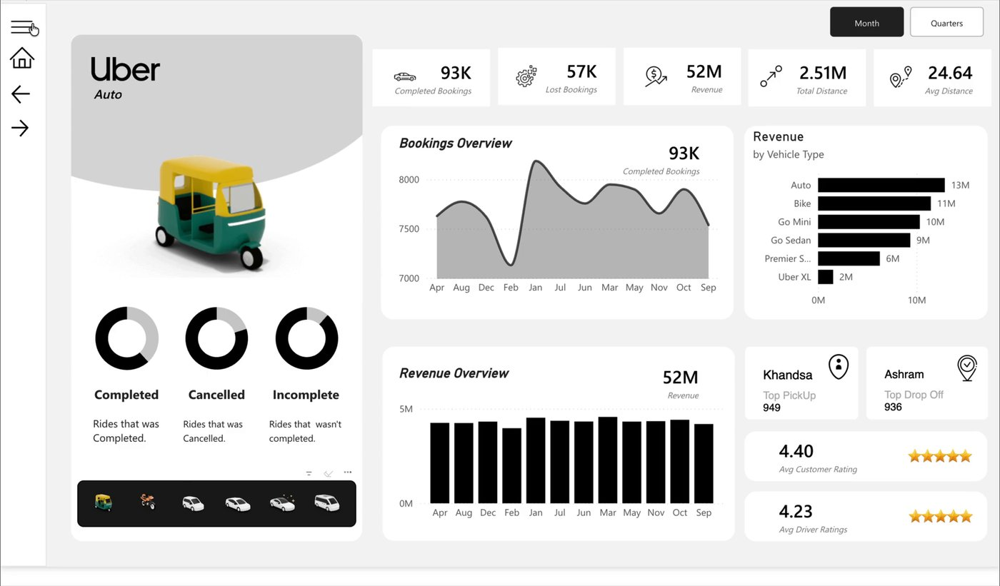
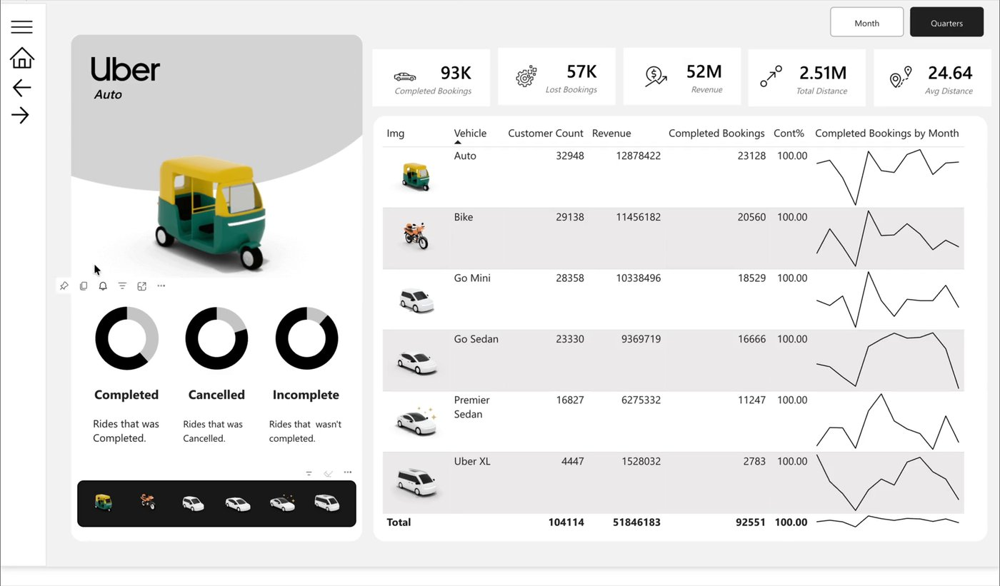
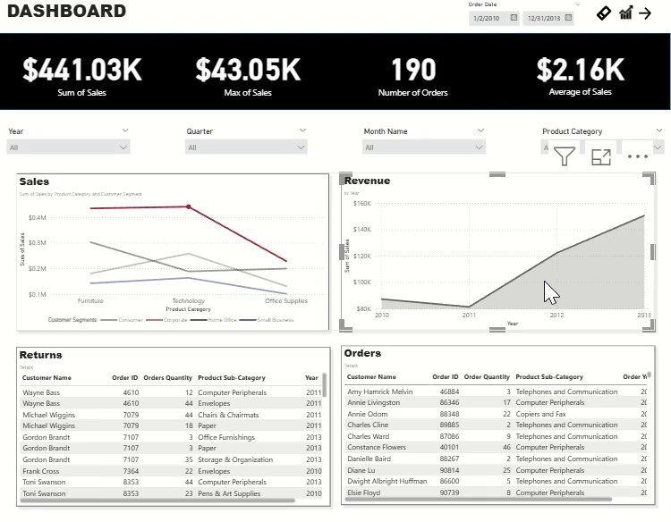
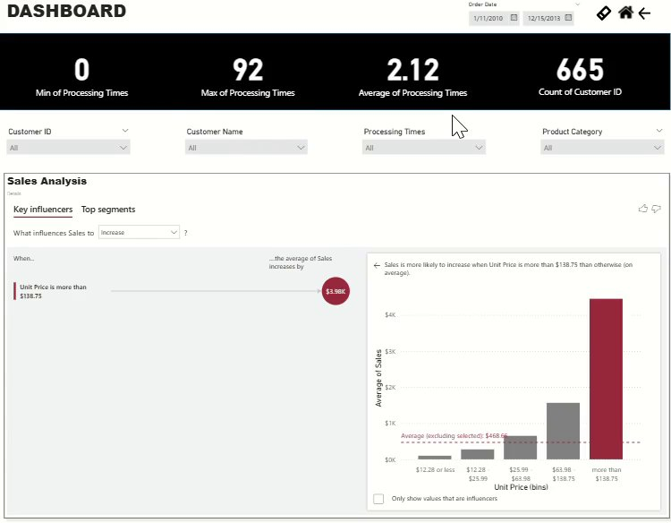

I turn raw data into decisions people can act on.
I build Power BI dashboards and reporting systems that go beyond charts — surfacing the specific insight behind the numbers and the business decision it should drive. Based in Cairo, working with teams anywhere.
The analyst behind the dashboards
Business Information Systems background, Power BI at the core, and a habit of asking "so what should we do about it?"
I make data easy to read — so people can act on facts, not guesswork, and make the decisions their business actually needs.
I'm currently an Operational Sales Analyst at Arab Business Machine, where I clean and model sales data, build Power BI dashboards for leadership, and maintain the databases behind daily reporting — turning scattered numbers into something the business can act on.
My toolkit centers on Power BI (DAX, Power Query, data modeling), Excel, and Python (Pandas, NumPy) for analysis, with a Business Information Systems degree underneath it. I recently completed a UI/UX design bootcamp too, which shows in how I lay out a dashboard — every report should be easy to read before it's ever explained out loud.
What I'm looking for now is a role where I can do more of that: help a team make better decisions with their data while growing my own skills and portfolio along the way. I want to be part of a business's growth, not just its reporting — in the room when decisions get made, not just producing the numbers behind them.
Three dashboards, three business questions
Each project below is built around a real decision the report needs to support — not just what the data shows, but what to do next.


HR Workforce & Attendance Overview
The Ask
An HR team tracking 498 employees across 6 departments needed one place to monitor headcount, performance, pay, and attendance — instead of pulling separate spreadsheets for each question.
What I Built
A multi-page Power BI report (Home, Attendance, Performance, Trends) with department and seniority-group slicers, attendance-flag tracking by date, and side-by-side performance/salary comparisons by gender.
Highlighted Data
Arrival patterns split almost evenly across Late, Slightly Late, and On Time (33% each) — meaning lateness wasn't an outlier problem, it was a structural one worth addressing at the policy level, not employee by employee.
Value Delivered
Gives HR leadership a single screen to flag attendance risk early, compare performance and pay equity by department, and back headcount conversations with real numbers instead of anecdotes.


Ride-Hailing Operations Dashboard
The Ask
Model end-to-end ride operations — bookings, cancellations, revenue, and rider behavior — across six vehicle types, so ops and pricing teams can see where demand and revenue actually come from.
What I Built
A multi-page report (Overview, Vehicle, Revenue, Rider, Location) with completed/cancelled/incomplete breakdowns, monthly booking trends, top pickup/drop-off locations, and a full revenue table by vehicle type.
Highlighted Data
Auto led every vehicle type in total revenue ($13M) despite a lower fare than Uber XL — completed bookings, not premium pricing, were the actual revenue driver. Meanwhile 57K lost bookings signaled a supply gap worth investigating.
Value Delivered
Gives operations and pricing teams a fast read on where to prioritize driver supply, which vehicle segment to protect, and where lost demand is concentrated geographically.


Retail Sales & Pricing Insight Report
The Ask
Move a four-year retail order dataset from "what happened" reporting to "why it happened" — specifically, understand what actually drives sales up or down, not just track the totals.
What I Built
A Power BI report combining sales/revenue trends, a full returns and orders log, and Power BI's Key Influencers visual to statistically test which factors move average sales, alongside a 665-customer insight table.
Highlighted Data
The Key Influencers analysis found unit price above $138.75 was the single strongest driver of a sales increase (+$3.98K on average) — a statistically grounded case for testing premium pricing on specific product lines, not a guess.
Value Delivered
Gives merchandising and pricing teams a data-backed reason to test pricing strategy on specific categories, and a returns view that flags which products and customers are driving avoidable revenue loss.
What I work with
Core BI and analysis tools, plus the business skills that decide what to do with the output.
Analysis & Visualization
- Power BI ●●●●●
- DAX & Power Query ●●●●○
- Excel (Advanced) ●●●●●
- Python — Pandas, NumPy ●●●○○
Business & Reporting
- KPI Monitoring
- Dashboard Development
- Database Management
- Market & Competitor Research
Working With People
- Stakeholder Communication
- Project Management
- Problem Solving
- Leadership
Certifications
Continuous, recent, and directly relevant to BI and analyst work.
Have a dataset that needs a story?
I'm open to Data Analyst and Business Analyst roles where the goal is turning reporting into real decisions. Let's talk about what you're working on.